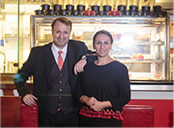
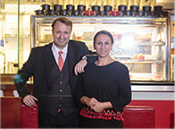

A New Gastronomic-Discovery
FOR MEAT LOVERS. WE BUILD GREAT
FUN DINING EXPERIENCES. WE DO
IT WELL!
organization specializing in the development of quality
fun dining experiences throughout Shenzhen, China
with additional diversified businesses associated with
the hospitality industry.
Dincli, the Bus Grill Turkish Steakhouse restaurant
group was established in 2017 and now operates 1 high
performance Turkish Steakhouse restaurant with
exciting projects under development, in addition to the
associated businesses within the portfolio.

To exceed customer expectations in relation to quality
fun dining experiences in the areas of dry aged steak
and Turkish cuisine, service and ambience while
strengthening the growth and viability of all segments
of the company for the long term benefit of employees,
customers, shareholders, partners and suppliers
The philosophy of Bus Grill Turkish Steakhouse Concept
is to efficiently produce high quality dry aged beef and
Turkish cuisine, in interactive kitchen environments
where possible, with ingredients that are fresh local
produce or where required, the best available imported
products.
of commitment are:
and services of genuine quality
To offer our products and services
at a value-for-money price point
To motivate and support members o
f our team at all levels
To continuously grow
facilities in prime locations that offer high quality dining
experiences in a friendly relaxed environment at an affordable
price that represents excellent value for money. Total customer
satisfaction is our aim.
to the overall profitability of the company.
the international market, staff is trained to a high level and
ingredients and produce are sourced from the best
available locations.
satisfaction within our subsidiary companies.
product, awareness of our customer base, creating customer
satisfaction, encouraging and developing customer loyalty
through our loyalty program, customer comment and
feedback, implementing effective promotion and marketing
activities, consistent training implementation and
professional practices and procedure
AND BE FREE!
TRENDY & MODERN


-
BIROL DINCLI
Born in Turkey and trained
in Turkey and United States.
Worked and trained with
famous star chefs like; Poul
Boucce, Alain Ducasse, Pierre
Gargari, Patrick Terrien and
Philippe Clergue.
in Turkey then went to Le Cordon Bleu in France. After
graduation he worked Turkey for only 2 years then set out
on his discovery in gastronomy world wide; United Stated,
Switzerland, Russia, Greece, Kazakhstan and China, working
in luxury hotels and Michelin restaurants - Starwood,
Intercontinental Hotels Group, Kempinski and Marco
Polo Hotels.
feelings and emotions,
and that’s why we’re not
just a restaurant.”
 

career he has prepared special menus for presidents,
prime ministers, government leaders, CEO’s and famous
celebrities of the world.
Intercontinental Shenzhen. After opening the Westin and
St Regis hotels in Xian, he returned to Shenzhen to join
the Marco Polo, bringing many awards as a driving force
in Shenzhen’s F&B world.
sardines to produce sophisticated, avant-garde fun
dining, or using sophisticated, avant-garde techniques to
produce the simplest of steak and Turkish and global
dishes and hospitality industries, he approaches both
with an equal lack of prejudice and unbiased opinion.
staked out an international reputation with his
highly personal and completely original F&B hospitality
and cuisine, specializing in highly technical plays on
texture, temperature, and preconceived expectations.
of Birol’s passion. The BUS GRILL’s design theme is
about simplicity and enjoying the experience. This
is Birol’s unique embrace of dry aged beef & modern
Turkish. Viewed casually, BUS GRILL’s populist formula
seems a radical departure from the sophisticated,
avant-garde Turkish Steakhouse cuisine that Birol has
been known for. But at it’s heart is a unique democracy
vision, with an undercurrent that unites the two.
-
November, 28th 2017Turkish restaurant named
China’s best new diner
Bus Grill Turkish Steakhouse
was opened in China’s southern
Shenzhen city 10 months agoA Turkish Steakhouse
restaurant in southern China
has been named as the “New
Restaurant of the Year” in a
competition held by the
country's online magazine
Thatsmag.READ MORE November, 28th 2017Çin'de internetten yayın
November, 28th 2017Çin'de internetten yayın
yapan bir derginin her yıl
düzenlediği “Yılın Restoranı"
yarışmasında bu yıl bir Türk
işletmesi birinci oldu."That’s PRD Food and Drink"
adlı yarışma, Çin’de yaklaşık
900 milyon kullanıcısı olan
sosyal mesajlaşma ve
paylaşım uygulaması
Wechat üzerinden bir ay
süren oylamayla yapıldı.READ MORE -
 November, 28th 2017Çin'de internetten yayın yapan
November, 28th 2017Çin'de internetten yayın yapan
Thatsmag dergisinin her yıl
düzenlediği "Yılın Restoranı"
yarışmasında bu yıl
bir Türk işletmesi birinci oldu.Çin'deki bir Türk restoranı "Yılın
En İyi Restoranı" seçildi.
Ülkede internetten yayın
yapan Thatsmag dergisinin her
yıl düzenlediği “Yılın Restoranı"
yarışmasında bu yıl bir Türk
işletmesi birinci oldu.READ MORE November, 28th 2017Çin'de Türk restoranına
November, 28th 2017Çin'de Türk restoranına
büyük ödülÇin'de düzenlenen 'Yılın
Restoranı' yarışmasında bir
Türk restoranı birinci seçildi.Çin'de internet üzerinden
yayın yapan 'Thatsmag'
dergisinin her yıl düzenlediği
"Yılın Restoranı"
yarışmasında bu yıl bir Türk
işletmesi birinci oldu.READ MORE
OF THE YEAR
adipisicing elit, sed do eiusmod tor
incididunt ut labore et dolore magna
aliqua. Ut enim ad minim veniam.
nostrud exercitation ullamco laboris nisi ut aliquip ex ea commodo

PRESS AND REVIEWS
CAREERS
promotions and information from Bus Grill.
INFO@BUSGRILL.COM
Futian CBD, SHENZHEN CHINA 518048
© BUS GRILL 2018 . ALL RIGHTS RESERVED
DESIGN BY EPICENTER DESIGN & MANUFACTURE